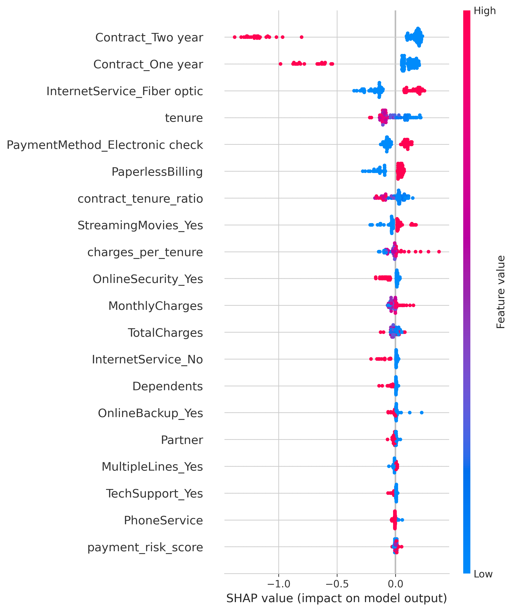

An end-to-end machine learning system that identifies at-risk telecom customers with 93% recall, enabling data-driven retention strategies projected to save $367K annually.
Telecom companies lose $1,500 per churned customer in lifetime value. With a 26.5% churn rate, that translates to nearly $2.8M in annual losses for a typical customer base.
Built an end-to-end ML pipeline using XGBoost with SHAP explainability that identifies at-risk customers and recommends targeted interventions.
Comprehensive evaluation with confidence intervals, baseline comparisons, and statistical validation
XGBoost vs baselines and alternative algorithms
| Comparison | Mean Diff | t-statistic | p-value | Cohen's d | Result |
|---|---|---|---|---|---|
| XGBoost vs Logistic Regression | 0.345 | 63.57 | < 0.001 | 44.95 | Significant |
| XGBoost vs Random Forest | 0.002 | 2.90 | 0.044 | 0.20 | Significant |
| XGBoost vs LightGBM | 0.002 | 1.62 | 0.181 | 0.19 | Not Significant |
Understanding what drives churn predictions using SHAP (SHapley Additive exPlanations)
Two-year contracts reduce churn to 3% vs 42% for month-to-month. This is the single strongest predictor.
Fiber optic users churn more, possibly due to higher expectations and pricing. No internet = lowest churn.
New customers (<12 months) churn at 48%. After 4+ years, churn drops to 8%. Early engagement is critical.
Electronic check users churn at 45%. Automatic payments correlate with lower churn (15%).
Each dot represents a customer. Color indicates feature value (red = high, blue = low). Position shows impact on churn prediction.

Adjust customer attributes and see how churn risk changes in real-time
Model performance and churn patterns across customer segments
| Segment | N | Churn Rate | Precision | Recall | F1 | FPR |
|---|
This project demonstrates an end-to-end machine learning workflow: from data exploration and feature engineering through model training, evaluation, and deployment as an interactive portfolio piece.
The goal was not just to build a model, but to tell a clear business story: who is churning, why, and what actionable steps reduce risk — backed by rigorous statistical validation and transparent model explanations.
Note: Business impact metrics are based on standard industry CLV assumptions applied to the IBM Telco sample dataset.